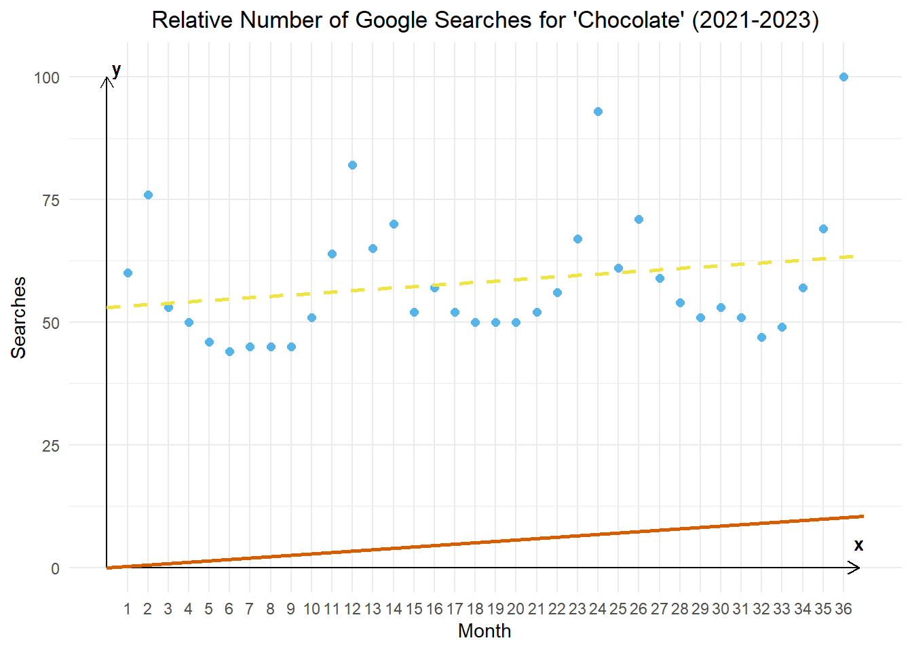
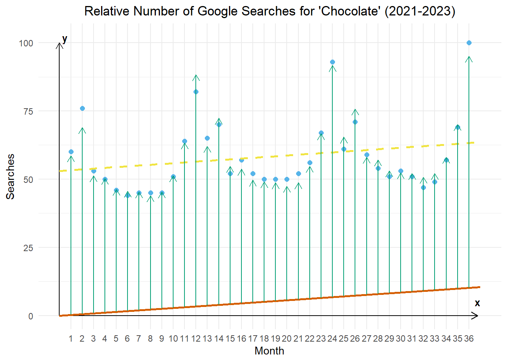
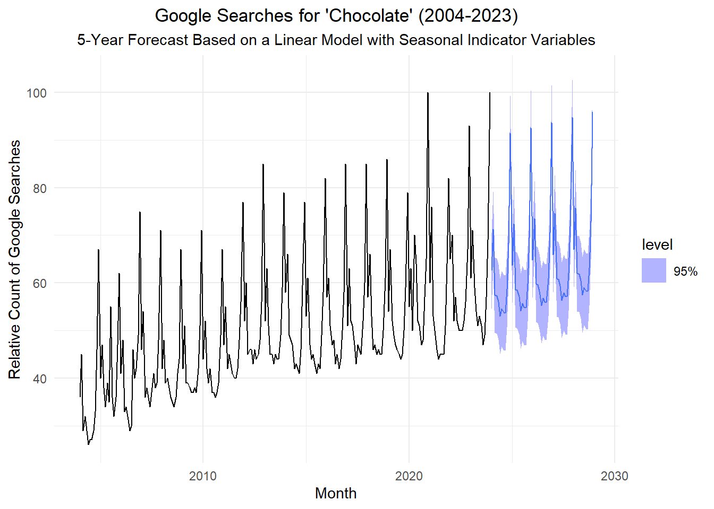

Untitled
Recall the time series representing the monthly relative number of Google searches for the term “chocolate.” Here is a time plot of the data from 2021 to 2023. Month 1 is January 2021, month 13 is January 2022, and month 25 is January 2023.
We fit a regression line to these data.

Now, we draw a line that is parallel to the regression line (has the same slope) but has a Y-intercept of 0.

For each month, we find the average amount that the relative number of google seachers that month deviates from the orange line (that is parallel to the regression line and passes through the origin). So, the length of the green line is the same for every January, etc.

When the bottom of the green arrow is on the orange line, the top of the green arrow is the estimate of the value of the time series for that month.
We will create a linear model that includes a constant term for each month. This constant monthly term is called a seasonal indicator variable. This name is derived from the fact that each variable indicates (either as 1 or 0) whether a given month is represented. For example, one of the seasonal indicator variables will represent January. It will be equal to 1 for any value of \(t\) representing an observation drawn in January and 0 otherwise. Indicator variables are also called dummy varaibles.
This additive model with seasonal indicator variables can be perceived similarly to other additive models with a seasonal component:
\[ x_t = m_t + s_t + z_t \] where \[ s_t = \begin{cases} \beta_1, & t ~\text{falls in season}~ 1 \\ \beta_2, & t ~\text{falls in season}~ 2 \\ ⋮~~~~ & ~~~~~~~~~~~~⋮ \\ \beta_s, & t ~\text{falls in season}~ s \end{cases} \] and \(s\) is the number of seasons in one cycle/period, and \(n\) is the number of observations, so \(t = 1, 2, \ldots, n\) and \(i = 1, 2, \ldots, s\), and \(z_t\) is the residual error series, which can be autocorrelated.
It is important to note that \(m_t\) does not need to be a constant. It can be a linear trend: \[ m_t = \alpha_0 + \alpha_1 t \] or quadratic: \[ m_t = \alpha_0 + \alpha_1 t + \alpha_2 t^2 \] a polynomial of degree \(p\): \[ m_t = \alpha_0 + \alpha_1 t + \alpha_2 t^2 + \cdots + \alpha_p t^p \] or any other function of \(t\).
If \(s_t\) has the same value for all corresponding seasons, then we can write the model as: \[ x_t = m_t + \beta_{1 + [(t-1) \mod s]} + z_t \]
Putting this all together, if we have a time series that has a linear trend and monthly observations where \(t=1\) corresponds to January, then the model becomes: \[\begin{align*} x_t &= ~~~~ \alpha_1 t + s_t + z_t \\ &= \begin{cases} \alpha_1 t + \beta_1 + z_t, & t = 1, 13, 25, \ldots ~~~~ ~~(January) \\ \alpha_1 t + \beta_2 + z_t, & t = 2, 14, 26, \ldots ~~~~ ~~(February) \\ ~~~~~~~~⋮ & ~~~~~~~~~~~~⋮ \\ \alpha_1 t + \beta_{12} + z_t, & t = 12, 24, 36, \ldots ~~~~ (December) \end{cases} \end{align*}\]
This is the model illustrated in Figure 4. The orange line represents the term \(\alpha_1 t\) and the green arrows represent the values of \(\beta_1, ~ \beta_2, ~ \ldots, ~ \beta_{12}\).
The folded chunk of code below fits the model to the data and computes the estimated parameter values.
Show the code
chocolate_month <- rio::import("https://byuistats.github.io/timeseries/data/chocolate.csv") |>
mutate(
dates = yearmonth(ym(Month)),
month = month(dates),
year = year(dates),
stats_time = year + (month - 1) / 12,
month_seq = 1:n()
) |>
mutate(month = factor(month)) |>
as_tsibble(index = dates)
# Fit regression model
chocolate_lm <- chocolate_month |>
model(TSLM(chocolate ~ 0 + stats_time + month))
# Estimated parameter values
param_est <- chocolate_lm |>
tidy() |>
pull(estimate)The estimated value of \(\alpha_1\) is 1.1316416. The estimated values for the \(\beta_i\) parameters are:
Estimated values of $beta_i$ for the fitted model for chocolate search time series.
| Jan | Feb | Mar | Apr | May | Jun |
|---|---|---|---|---|---|
| -2227.91 | -2219.305 | -2233.149 | -2233.443 | -2234.838 | -2237.932 |
| Jul | Aug | Sep | Oct | Nov | Dec |
|---|---|---|---|---|---|
| -2236.476 | -2237.37 | -2237.515 | -2232.659 | -2223.003 | -2200.098 |
Now, we compute forecasted (future) values for the relative number of Google searches for the word “Chocolate.”
Show the code
num_years_to_forecast <- 5
new_dat <- chocolate_month |>
as_tibble() |>
tail(num_years_to_forecast * 12) |>
dplyr::select(stats_time, month) |>
mutate(
stats_time = stats_time + num_years_to_forecast,
alpha = tidy(chocolate_lm) |> slice(1) |> pull(estimate),
beta = rep(tidy(chocolate_lm) |> slice(2:13) |> pull(estimate), num_years_to_forecast)
)
chocolate_forecast <- chocolate_lm |>
forecast(new_data=as_tsibble(new_dat, index = stats_time))
chocolate_forecast |>
autoplot(chocolate_month, level = 95) +
labs(
x = "Month",
y = "Relative Count of Google Searches",
title = paste0("Google Searches for 'Chocolate' (", min(chocolate_month$year), "-", max(chocolate_month$year), ")"),
subtitle = paste0(num_years_to_forecast, "-Year Forecast Based on a Linear Model with Seasonal Indicator Variables")
) +
theme_minimal() +
theme(
plot.title = element_text(hjust = 0.5),
plot.subtitle = element_text(hjust = 0.5)
)
Show the code
new_dat |>
mutate(estimate = alpha * stats_time + beta) |>
display_partial_table(nrow_head = 4, nrow_tail = 3, decimals = 3)| stats_time | month | alpha | beta | estimate |
|---|---|---|---|---|
| 2024 | 1 | 1.132 | -2227.91 | 62.532 |
| 2024.083 | 2 | 1.132 | -2219.305 | 71.232 |
| 2024.167 | 3 | 1.132 | -2233.149 | 57.482 |
| 2024.25 | 4 | 1.132 | -2233.443 | 57.282 |
| ⋮ | ⋮ | ⋮ | ⋮ | ⋮ |
| 2028.75 | 10 | 1.132 | -2232.659 | 63.159 |
| 2028.833 | 11 | 1.132 | -2223.003 | 72.909 |
| 2028.917 | 12 | 1.132 | -2200.098 | 95.909 |